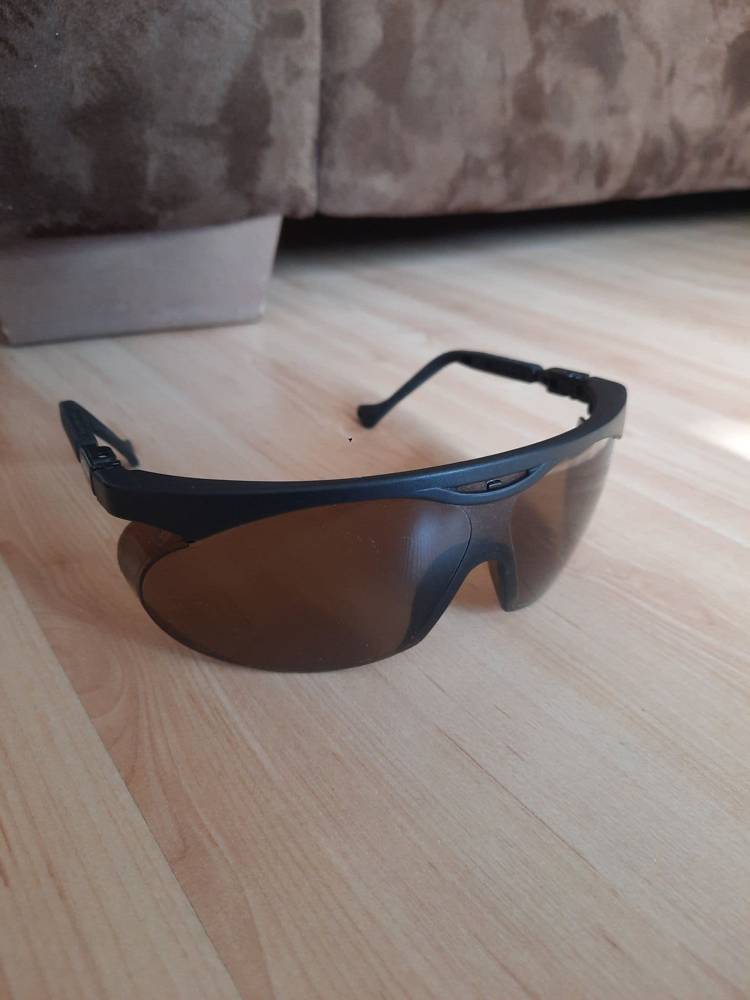

01Nowe — sklepy stacjonarne / online SE
Ceny z 30.09–01.10.2026. Wszystkie pozycje mają w 100% przezroczystą szybkę (klar lins / transparent) — bez filtra, bez photochrom.

19,90 krJULA
Skyddsglasögon Bluewear, Cobra 🥇 NAJTANIEJ
✔ EN166 (certyfikat ochrony oczu) · ✔ 4,7★ / 139 opinii
Båglös front — utmärkt sikt · lätta och bekväma · klar lins
Hämta i varuhus efter 2 timmar. Standard wśród tanich clear-lens w SE — bestseller Jula.
jula.se → Cobra

24,90 krBILTEMA
Skyddsglasögon (art. 2000066599)
✔ Klar polykarbonat · ✔ Repskydd · ✔ UV-skydd
„Lätta och klara skyddsglasögon av polykarbonat"
I lager. Uwaga: „Skyddsglasögon, klara" (2000062116) to inny produkt — gogle za 129 kr, nie brać przez pomyłkę.
biltema.se → produkt
🖼️ brak zdjęcia (search CO nie renderuje się bez JS)
29,90 krCLAS OHLSON
RFX+Care Graid
Klar lins, klasyczna konstrukcja z zausznikami
Sollentuna Centrum / Barkarby — odbiór od ręki.
clasohlson.com → wyszukaj „Graid"
🖼️ wariant w tym samym varuhus co Cobra
29,90 krJULA
Skyddsglasögon Bluewear, Mamba
Transparent båge · klar lins — alternatywa, gdyby Cobry zabrakło na półce
jula.se → Mamba

44 krAMAZON.SE
3M VIRTUA A160 🥈 AMAZON TOP
✔ Genomskinlig (transparent) · ✔ 4,5★ · I lager
Marka 3M (USA), klasyk safety eyewear
Znalaziona frazą „sportglasögon clear” — najtańsza opcja z dostawą Amazon.
amazon.se → 3M VIRTUA

62 krAMAZON.SE
Honeywell A800
✔ Transparent · ✔ Reptåligt · ✔ 4,5★ · I lager
„Sportiga” safety glasses Honeywell (USA)
amazon.se → Honeywell A800

76 krAMAZON.SE
uvex x-fit 9199
✔ Anti-fog (imfria) · ✔ Reptåliga · ✔ 100% UV-400 · 4,4★
Niemiecka marka, transparent, opaska sportowa
Anti-fog robi różnicę na rowerze w chłodne poranki. Dostawa 1–2 dni.
amazon.se → uvex x-fit

131 krAMAZON.SE
HITWAY — 4 wymienne linse
Zestaw: polaryzacyjna przyciemniana + clear + żółta + zapasowa · 5,0★ · I lager
Opcja „jedna para na cały rok" — latem ciemna, zimą clear. Wyższa półka budżetu.
amazon.se → HITWAY
Niżej w rankingu Amazon: uvex Pheos 88 kr (4,5★, link) · Dräger X-pect 8120 99 kr (4,5★, dla okularowców, link) · uvex i-5 134 kr (4,6★, opis wprost „för cykling”, link) · Long Keeper transparent 193 kr (4,1★, link)
02Używane — Blocket / Tradera / FB Marketplace
Werdykt: przy cenie 19,90 kr za nowe, używane nie ma ekonomiki — chyba że odbiór osobisty (zero wysyłki ~45 kr).

69 krTRADERA · AUKCJA
uvex Skyper
„Reptåliga, mycket fint skick" · klar lins · koniec: dziś 19:28 (0 ofert przy 69 kr)
+wysyłka ~45 kr ⇒ ~115 kr łącznie = drożej niż nowe. Licytować tylko dla zabawy.
tradera.com → aukcja

39 krTRADERA · KÖP NU
Skyddsglasögon — klar lins
„Klar lins och justerbar näsbrygga" · kończy się 08.10
Też matematyka nie gra: 39 + 45 wysyłki > 19,90 + odbiór w Jula.
tradera.com → ogłoszenie
🖼️ Blocket — sprzedawca nie dodał zdjęcia
50 krBLOCKET · VÄSBY
Merida cykelglasögon — Upplands Väsby
Odbiór osobisty = zero wysyłki. ⚠️ Opis nie mówi czy lins clear — najpierw zapytaj sprzedawcę. Ogłoszenie wygląda na starsze.
blocket.se → ogłoszenie
🖼️ Rogelli — z listingu Tradera
100 krTRADERA · KÖP NU
Rogelli sportglasögon, utbytbara linser
Holenderska marka rowerowa, wymienna optyka (clear w zestawie)
tradera.com → szukaj „Rogelli"
03Sprawdzone i odrzucone
| Źródło | Wynik | Powód |
|---|
| XXL.se | brak clear | Oferta wyłącznie tonowana (PAUS od 80 kr, BITS 249 kr) |
| Stadium.se | brak clear | Zero przezroczystych szybek w asortymencie rowerowym |
| Stadium Outlet | brak | Outlet = resztki tinted, nic clear |
| Intersport.se | za drogo | Jedyne clear to gogle innebandy od 299 kr |
| Hornbach.se | bot-challenge | Fastly „Client Challenge" — i tak nie pobije 19,90 kr |
| Bauhaus.se | JS-only | Search tylko przez Algolia JS; marginalny |
| FB Marketplace | 0 trafień | Zapytania zwracają rowery i „rowing machines" (🇸🇪 roddmaskin), brak cykelglasögon w promieniu 30 km |
| AliExpress | wykluczone | Per wymóg: nie z Chin (najtańsze tam: 10,25 SEK safety glasses) |
| Photochromic (SCVCN/Kapvoe/ROCKBROS) | nie spełnia | Przyciemniają się w słońcu → nie jest „bez żadnego przyciemnienia" |
| uvex sportstyle 204 (Amazon 249 kr) | zły wariant | Na amazon.se tylko smoke/blue/orange — wersji clear brak |
04Metodologia
Zakres: 30.09 (wieczór) – 01.10.2026 (rano). Frazy: cykelglasögon, sportglasögon, skyddsglasögon, löparglasögon (+ clear/transparent warianty, SE+PL). Kanały: skrypty własne (Blocket SSR, Tradera RSC, FB GraphQL, AliExpress SSR), curl+parser na Amazon.se (190+ listingów + 6 PDP), Chrome na Pi dla Jula/Clas Ohlson/Biltema (search client-side), subagent-scrape dla XXL/Stadium/Stadium Outlet/Intersport. Ceny lokalne SEK, dostępność sprawdzana na żywo. Raport wygenerowany przez Andrzeja (OpenClaw, GLM-5.3).